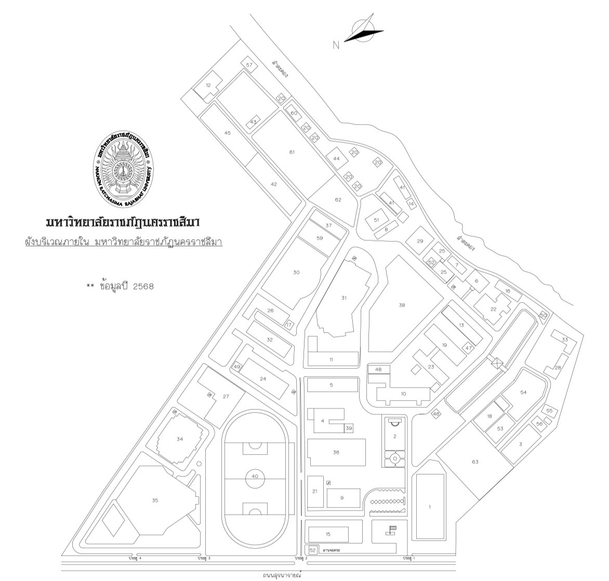

A CLEANER CAMPUS STARTS HERE
ทิ้งให้ถูกจุด เพื่อมหาวิทยาลัยของเรา
ค้นหาจุดตั้งถังขยะ พร้อมภาพสถานที่จริง ให้การแยกขยะเป็นเรื่องง่ายในทุกวัน
10จุดตั้งถังขยะ
ภายในมหาวิทยาลัย
ภายในมหาวิทยาลัย

จุดตั้งถังขยะเลือกหมุดเพื่อดูภาพสถานที่จริง
พื้นที่สะอาด เริ่มจากการแยกขยะของเราทุกคน
NRRU · CAMPUS MAP